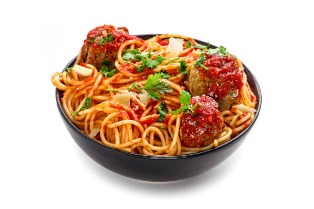

How to Make Pasta

This pasta recipe is easy to follow and has amazing flavour. Just follow along and you will have this delicious meal in no time.
Pasta is a food made from wheat flour and water, mixed into an unleavened door and boiled (or sometimes baked). For fresh pasta eggs are also added to the dough. Pasta is a carbohydrate, with some fibre and protein, and whilst thought of as an Italian food (Italy is where most pasta recipes originate) it is likely descended from Asian noodles brought to Europe from China in the 13th century.
Ingredients
- 2 cups flour
- 3 large eggs, at room temperature
- 2 tablespoons olive oil
- 1 teaspoon salt
- 2 tablespoons water, or as needed
Directions
- Gather all ingredients.
- Mix flour, eggs, olive oil, and salt in a bowl until combined. Add water, 1 teaspoon at a time, to flour mixture until a smooth, thick dough forms.
- Turn dough out onto a lightly floured work surface and knead for 10 minutes. Let dough rest for 5 to 10 minutes.
- Divide dough into 8 balls; use a pasta machine to roll and cut dough into desired pasta shape.